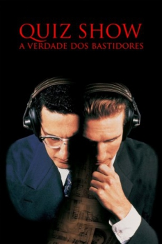

Quiz Show: A Verdade dos Bastidores (1994)


Fifty million people watched but no one saw a thing.

Avaliação (TMDb):


7.3/10 (604 votos)
Avaliação (Usuário):
Outro Título:Quiz Show
País:United States, 133 minutos
Idiomas falados:Inglês, Espanhol, Português
Gênero(s):História, Drama
Diretor(s):Robert Redford
Codec:MPEG-4
Número: 4751
Sinopse:
Programa de perguntas e respostas na TV, nos anos 1950, é investigado e se descobre que, visando a audiência, produtores passam a dar as respostas a um jovem de família rica, que passa a ganhar de um rapaz judeu muito mais inteligente.
Elenco:
John Turturro, Rob Morrow, Ralph Fiennes, Paul Scofield, David Paymer, Hank Azaria, Christopher McDonald, Johann Carlo, Elizabeth Wilson, Allan Rich
Tipo de mídia: DVD R/RW,
Legendas: Inglês, Português, Sem Legendas
Alugado: Não
Tela: 1.85:1